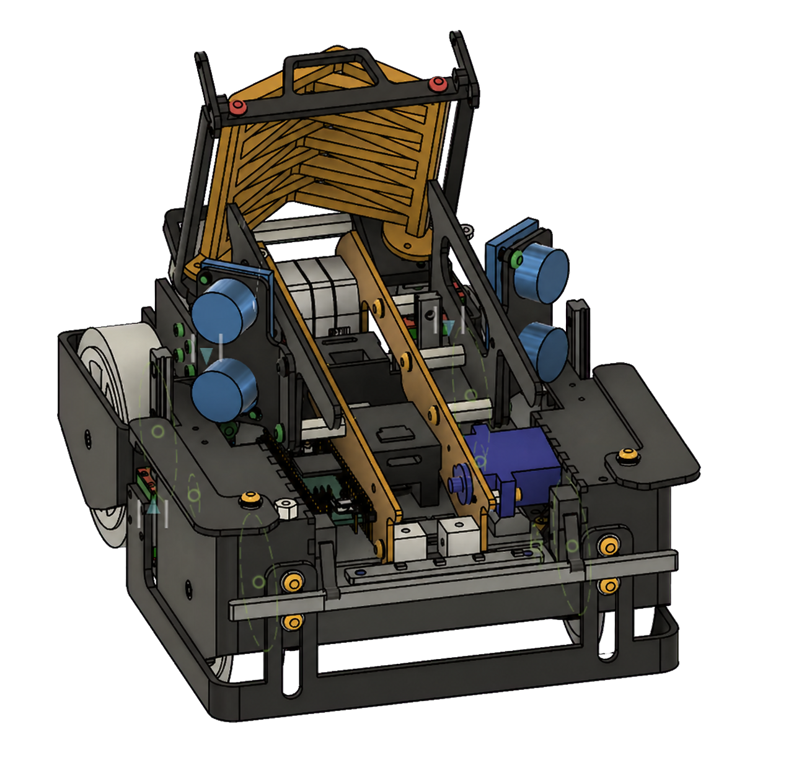
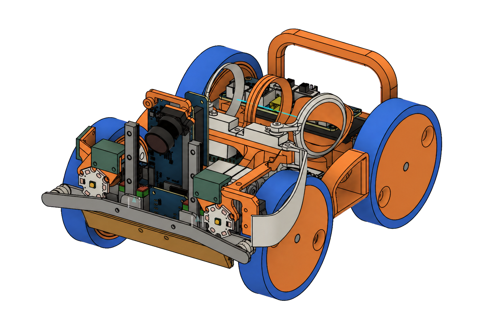
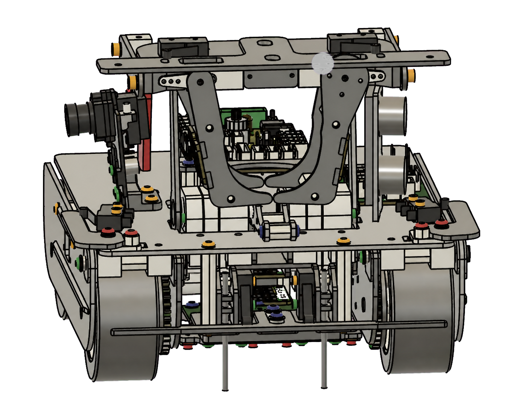
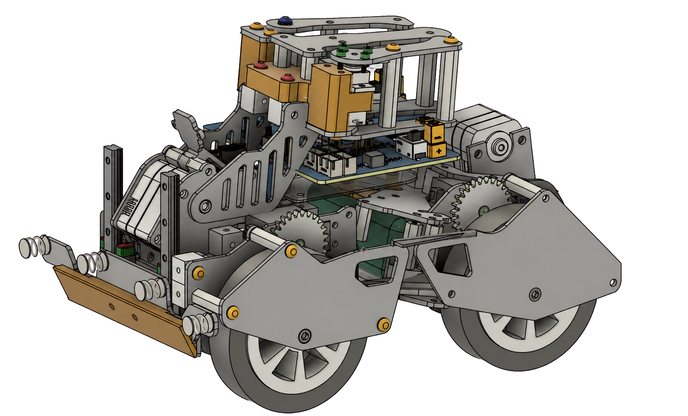
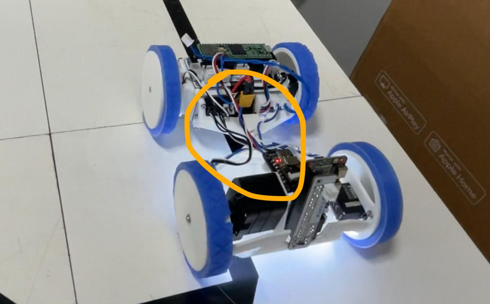

I'm an undergrad in Computer Engineering at NYU Tandon. I want to build robots whose movement is reproducible.
Today robots are tuned by hand. Engineers estimate the range a robot will encounter, from part tolerances to sensor drift to the room, then tune constants until it survives that range. Outside it, the robot fails and someone tunes again.
The code never changed. The robot did, and the room did. The code has no way to know that.
I've built robots since I was nine. Mechanical design, PCBs, firmware, on-device inference. It started with block code telling the robot to go forward and watching it go left, and it hasn't stopped. At RoboCup in Incheon this year, I attacked one axis of that variation at every layer. Lighting, floor, degradation. It worked, and I was still tuning it by hand.
I want to solve this. Robots that adapt on their own, not just as they wear down over time, but when the code moves to a different machine.
The robot working
Detecting a victim on-device, picking it up, deploying it, and leaving
the room. Perception, manipulation, and navigation running together.Following a line across the transition between flat ground and a slope.
The System I build
I designed the electronics stack myself: power distribution, the custom PCB, the connections between compute and control, and the serial protocol that joined them. The diagram follows the system from sensors and the K230D inference board through the controller to the motors and actuators.
Recent robots I built




Turning is choosing which tires slip
Slopes are the hardest part of RoboCup Rescue Line. Our four-wheel-drive robot slid on inclines at the gains that worked on flat ground. The problem was how the robot turns, which comes down to controlling the point it rotates around.
I ran differential tests and watched the chassis. Found the suspension absorbing the rotation. Its twist axis sat above the tires, and that gap is a moment arm and the turn I was asking for was being stored as twist instead. I brought the twist axis down parallel to the tire height. With the moment arm gone, the problem was isolated.

Our suspension isn't for vibration. It's a soft board that twists so all four tires stay on the ground. On the left its twist axis sits well above the tires, and that height gap turns lateral force into twist. On the right the axis is level with the tires, so there's nothing left to twist about.
Then the real question: how to control the rotation axis on four-wheel drive. The friction circle gave me the frame. Each tire has a limited budget of grip, gravity is already spending part of it on a slope, and what's left decides whether that tire holds or slips. Turning is choosing which tires slip and which hold. So I wrote a function that takes roll and pitch, estimates how much grip gravity has already taken from each tire, and sets the four powers to put the rotation center where I want it.
We held the same speed on slopes as on flat ground, at roughly 85% no-derail. Across three to four days of competition running, it derailed once. The 90 and 180 degree turn markers stayed hardcoded. We ran out of time, so I don't know whether the same function holds there, or on a robot I didn't build.
The model wasn't broken. The measurement was.
The K230D was a new chip to me. The vendor demo flashed and ran fine. My own detector produced nothing. Looking back I should have stayed on the demo path longer, but I wanted my own model, so I trained a MobileNet, failed to get it through quantization, and lost three days before pivoting to YOLOv8n because more people had that working on this chip.
It still didn't work, and I couldn't reason my way to why. Quantization was the one step I couldn't inspect. So I stopped reasoning and started listing: compile options, dependency versions, calibration set, activation and weight precision. Every one of them was something I could enumerate and test.
I scripted the sweep. Three configurations per model to check viability, then every option on the survivors. Thirteen quantized builds, scored against 78 ground truths across 50 validation images. A float32 reference build passed, which meant the architecture and decoder were correct and the failure had to be inside quantization.
It wasn't. The recall = 0 readings that had sent me down several dead ends were the nncase 2.9.0 simulator mis-executing the YOLOv8 DFL head. Upgrading the host compiler to 2.11.0, without touching anything on the device, made the same kmodel files report their real numbers. The final build used int16 activations and uint8 weights: r@0.4 of 0.970, 8 classes at about 27fps.
I had never built anyone else's idea.
I've built robots mostly alone. Teammates at three schools, but almost all of them came from other fields, so on the robotics itself I was the one deciding. Eleven years of that leaves you with a philosophy, and it's hard to tell a philosophy apart from a habit.
I met Hampus at the 2024 world championship in the Netherlands and we traded notes for a year. In 2026 Summer, I invited him to Japan to build a robot together. I raised over $7,000 in sponsorship for it. He came for a month, we lived in the same room, and we worked on the robot every waking hour of it.
The clearest case was his drivetrain. He ran three-wheel drive with a spin controlled rear wheel, and I had dismissed it for a year. Not on its merits; I had doubts about the balance of his robot as a whole, the wheel sat at a corner of a structure I wouldn't have built, and I thought my mechanisms were better almost everywhere else. So I never looked at the drivetrain by itself. Four-wheel drive was what I knew, and I assumed I could control the rotation center with it. Three wheels place that center for you, in hardware, for free.
What came out had my suspension, my debris guard, and my board, and his servo-to-tire mounting and his approach to the arm. Neither of us gave anything up to get there. We had been solving the same problem for years and arrived at different answers, and once we were building instead of comparing, it was obvious which answer was better for which part.
Watching a robot compete tells you whether it won. It doesn't tell you where a design is fragile, what it makes easy, or what it costs to build. I had held opinions for years about approaches I had never once built. So now I build the ones I'd have dismissed. That month was a month, but it's the only way the comparison means anything.

.jpeg)